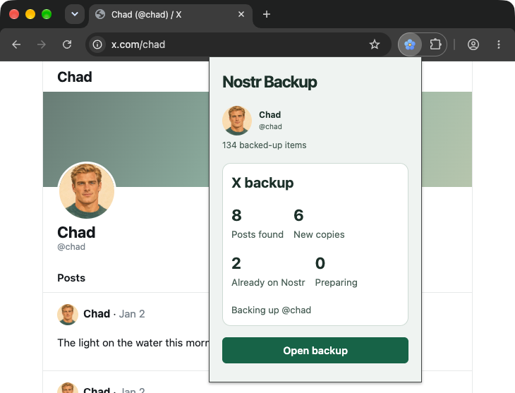

Back up your posts.
Automatically back up your X, Instagram and Facebook posts as you scroll your profiles.
- Download your posts and saved media.
- Only public posts are shared.

Why keep a copy?
If a platform suspends your account, you still have the posts you’ve saved. You can read them offline or while the service is down. Sharing your public posts on Nostr lets new readers find and follow you there, even if they don’t use the original platform.
Downloads
Chrome
Download ZIP- Unzip the download.
- Type
chrome://extensionsin the address bar and turn on Developer mode. - Choose Load unpacked and select the folder you unzipped.
Firefox 140+
Download ZIP- Open
about:debugging#/runtime/this-firefox. - Choose Load Temporary Add-on and select the ZIP.
Firefox removes temporary add-ons on restart, so export your archive first.
Safari Experimental
On a Mac with Xcode, unzip the package into a folder named nostr-backup-safari, then run this command from its parent folder. Open the generated Xcode project and build the app.
xcrun safari-web-extension-packager nostr-backup-safari --app-name "Nostr Backup" --macos-onlyYour first backup
Choose a profile
Click the extension icon beside your browser’s address bar. If it’s hidden, look in your browser’s extensions menu. Choose Create profile to get started, or sign in with your secret key. Keep that key private. Choose X or Instagram & Facebook, enter your username, turn on backup and select Save.
Browse your posts
Visit your profile and scroll. The extension saves posts as they appear, including older ones. Open the toolbar popup to see how many you’ve backed up.
Download your copy
Choose Backup → Download ZIP to save your archive. To include photos and videos, first choose Media → Back up media.

Sign in without a password
On sites that support Nostr login, choose the browser extension and approve the sign-in. You can use the same profile across those sites without entering a separate username or password.